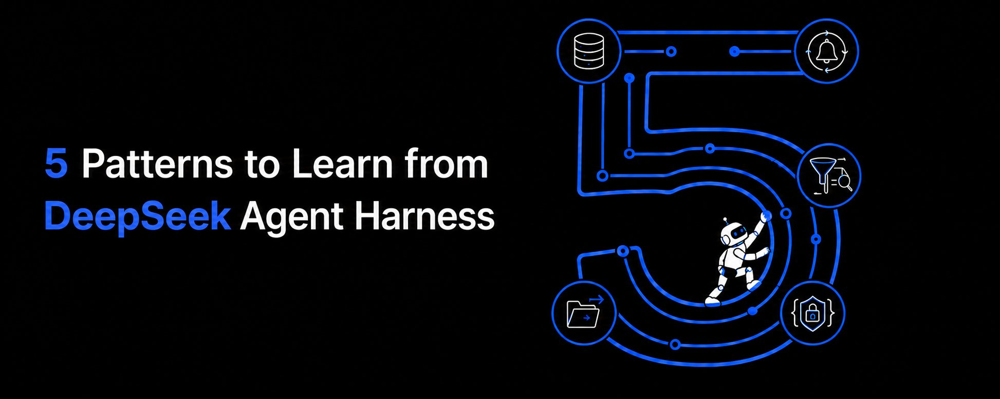
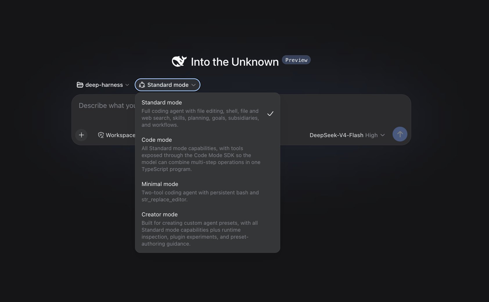
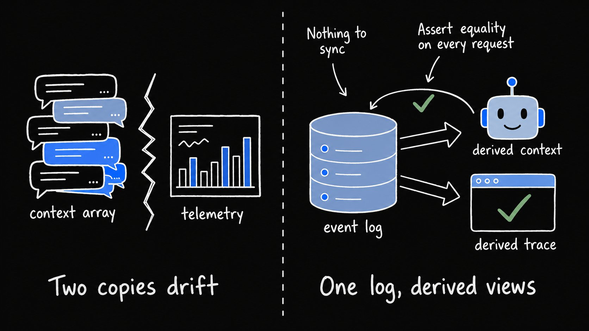
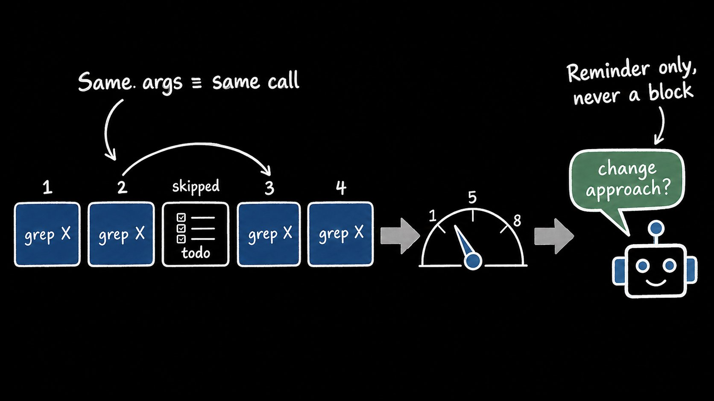
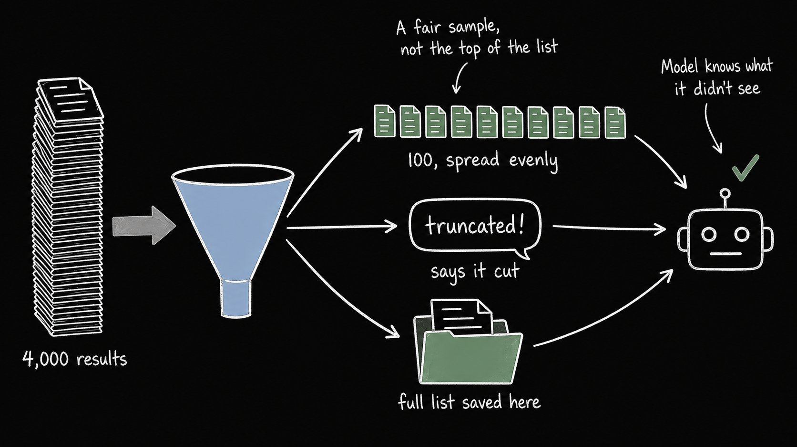
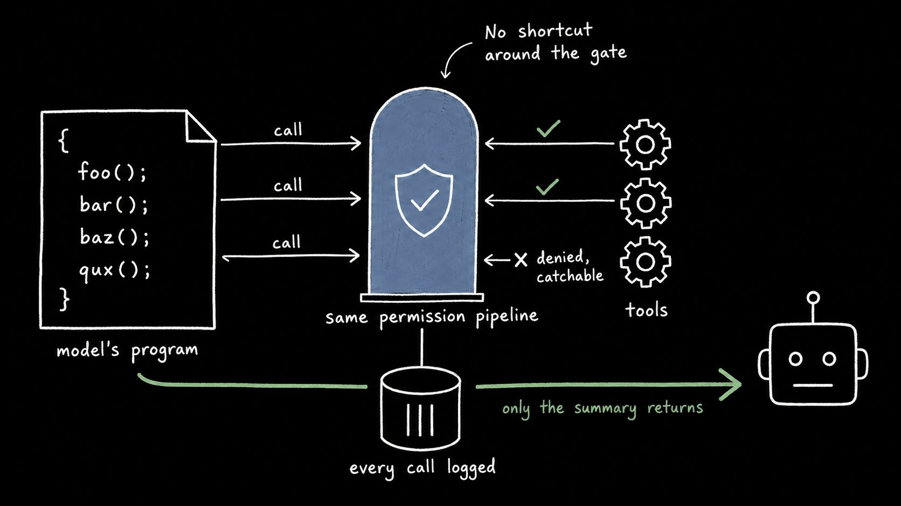
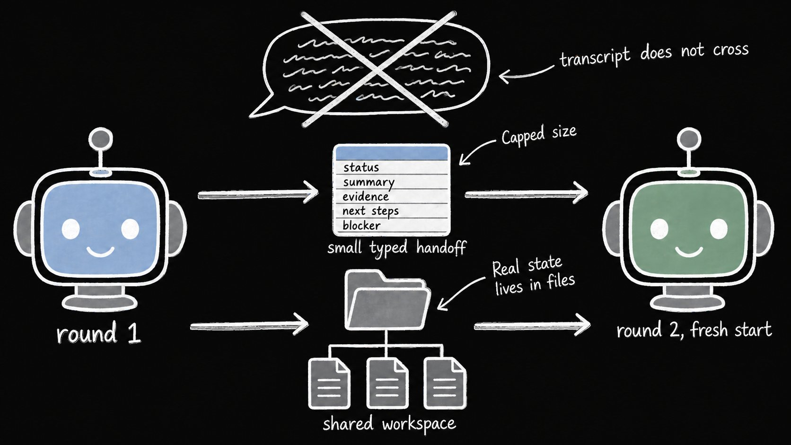

DeepSeek几天前开源了它的agent harness，成为GitHub史上最快破10万星的仓库：只用了48小时。这让作者很好奇里面到底有什么，于是在Mac上装下来跑了一整个周末、通读了源码。
结论是：你不需要迁移到它也能获得价值。代码库里有五个设计决策让他印象深刻：都是他以前遇到过、但从没见过处理得这么好的问题。本文逐一展开，细节足够你在任何技术栈上复用。
作者说：DeepSeek开源了它的agent harness，几天内就成了GitHub史上最快破10万星的仓库，48小时达成。这让他好奇里面到底有什么，于是装上、跑起来、读源码，花了一整个周末。

你不必切换到它也能获得价值。代码库里有五个设计决策让他特别在意：都是他以前遇到过、但从没见过处理得好的问题。他会逐一展开，细节足够你在自己的技术栈上直接使用。
如果你构建过agent，大概撞过这个：发给模型的上下文和你日志里记录的上下文对不上，于是你在用一份从未发生过的事件的记录调试一次失败运行。根因是同一信息存在两个地方：发给模型的消息数组、以及关于它的遥测，两者没有约束必须一致，时间一长就分叉。

DeepSeek Harness只有一个地方：session是append-only事件日志，每次模型请求的上下文都从日志重新计算。架构文档里有条硬规则：任何进入模型请求的东西必须能从日志重建，想把新东西放到模型面前，必须先定义新事件类型。
所以没有任何办法在不被记录的情况下往模型视野里塞东西：因为记录就是视野的来源。代码里有个检查拦截每个出去的LLM请求，逐字段与从日志的重新派生对比：消息、系统提示、工具schema、temperature，全部。任何不匹配就抛一个叫log-reconstruction desync的错误。
理解了这点，它们的trace UI也就说得通了：轨迹面板展示每次调用、每个token数、每个工具结果，且不需要任何额外插桩：它读的是系统要运转就必然存在的数据。要在自己栈里落地：反转写入顺序，先追加事件、再从追加构建请求，并在dev加那个相等性检查。大约二十行代码，把静默漂移变成看得见的测试失败。
每个跑过agent的人都见过它卡在反复调用同一个工具、同一组参数，一路烧token。两种常见处理方式都不好：硬阻断重复调用，会误伤那些本应重试的合法场景；什么都不做，循环会一直跑到上下文塞满。

它们的解法是一个小插件：计数对同一工具、相同参数的连续调用，计数到3、然后5、然后8时，往上下文里注入越来越强硬的提醒：别再重复了，重读上次结果，换方法或收尾。它从不阻断任何东西，模型始终保留最终决定权。
细节很讲究：同一参数换顺序仍算重复；两次相同grep之间的一次todo更新不会重置计数（否则任何小调用都会掩盖循环）；被拒绝的调用也算：agent反复重试一个一直被拒的调用，是最常见的循环。每个agent有独立计数器，子agent卡循环不会触发主agent的告警。
这个在任何一个能观察工具调用的harness里一个下午就能搭出来。在Claude Code上，光hooks就够了。
当你的搜索工具从4000个结果里返回前100个、却不说明截断时，模型就以为只有100个文件，之后的每个决策都建立在一个错误数字上。它们的文件搜索同样限结果数，但方式不同：超限时，从整个项目里均匀挑选100个而非前100个，模型得到公平样本而非按字母序排到最前的；结果明确声明被截断了；完整列表保存到文件并给出路径，模型需要时可以去读其余部分。

当沙箱拦截一个命令时，它们的bash工具会告诉模型：这是策略拒绝，不是命令的bug，不要再换方式重试。没有这句话，模型会花六轮试图绕过一条你故意写的规则。
给自己一小时审计工具：每个工具是否在截断时披露了？模型能否触达被截掉的部分？错误信息是否讲清楚了重试有没有用？
现在大家都在收敛到同一个模式：与其每轮一次工具调用，不如让模型写一个循环调用你工具的程序。五十次文件读取变成一次往返，只有程序返回的摘要进上下文。

Code mode就是它们对这个模式的实现：模型拿到唯一的工具run_code，其它所有工具都变成程序内部可调用的函数。程序里每个调用仍走完整权限管线，没有任何捷径；每个调用单独记录，所以你能看到程序做了什么，即使模型只看到一个结果；被拒绝的调用在程序内表现为可捕获的错误，而不是挂起或静默null。
如果你自己构建这类系统、或评估声称支持它的框架：先检查权限部分。跳过它，模型就有一条绕过你自己规则的路。
长跑agent会把上下文堆到上下文本身成为问题。某个点你必须重新开始，并指望笔记够用。DeepSeek Harness把重启做进了系统：重启循环围绕固定目标按轮次工作，每轮从零对话历史的全新agent开始。

轮次之间，新agent拿到共享工作区的文件加一个五字段交接：status、summary、evidence、next steps、blocker。transcript不跨轮次，所以每轮都从满推理能力开始，而不是跋涉过上一轮的残余。
退出规则也很讲究：agent至少要试三轮才能声明自己被卡住；只有人才能创建或修改目标，所以子agent不能发明自己的目标。如果你跑隔夜agent：先写好交接schema，设好大小上限，决定哪些状态活在文件里、哪些随上下文死掉。然后重启就只是系统运行方式的一部分。
作者说，他描述的每一件事大约十五分钟都能验证：给它一个你熟悉仓库里的任务，打开Trajectory标签读一遍运行：你会看到每个请求、每个工具调用、token数、以及从解码时间分离出来的首token时间。也可以把任何session导出成zip，自己读原始事件日志。

想直接测插件部分：打开 ~/.dsh/profiles/web/cordis.patch.yml，加三行禁用id为ui-sidebar的那行，刷新，侧边栏消失；删掉那三行，它又回来了：连UI都是配置文件里的行。想更深入，看GitHub源码，从解决你手头问题的那个开始。
参考：https://x.com/Saboo_Shubham_/status/2089177978265870817